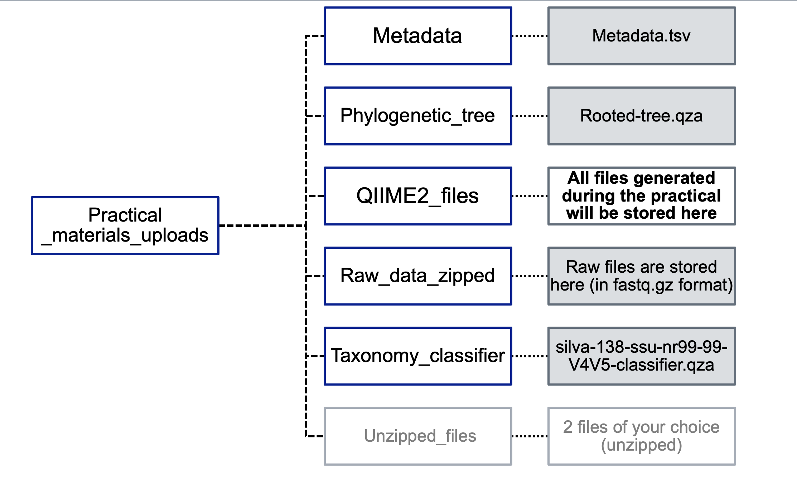

Workflow¶
PRELIMINARY READ PROCESSING¶
In our pipeline we will be working with reads that have already been demultiplexed. You will need to download the following starting folder for your analyses: Practical_materials_uploads. The folder is structured as follows.
Folder Structure¶

For each sample, there are two fastq files (R1 and R2). R1 corresponds to all the forward reads and R2 to all the reverse reads.
We will first look at the fastq files, then check the quality of the reads with FastQC and MultiQC, and then conduct read processing in QIIME2 (denoising and OTU clustering). Follow the steps below:
1. Check the fastq files¶
After sequencing, the output is provided in the form of two FASTQ files per sample, one labelled R1 (forward reads) and one labelled R2 (reverse reads). Each FASTQ file contains reads, and these are provided as an entry with 4 lines:
- The first line contains a sequence identifier, including information about the sequencing run and the cluster. It usually begins with an “@”.
- The second line contains the base calls of the sequence (A, C, T, G and N).
- The third line comprises a plus (+) sign, which acts as a separator.
- The fourth line, which is important for the next step, provides information on the quality of each of the base calls. These are Phred +33 encoded, using ASCII characters to represent the numerical quality scores.
An example of one entry of a FASTQ file (note that this corresponds to only one read of hundreds or thousands sequenced):

Exercise 1
Select two fastq files, one corresponding to forward reads (R1) and one corresponding to reverse reads (R2). Copy them to a new folder called Raw_data_unzipped. Unzip them either with double clicking (on a Windows machine) or by running the following command gzip -d NAME_OF_THE_FILE (on a Mac). Next, explore the files using the command line (tip: use the commands you learnt previously).
Question(s):
- Is the file format as expected?
- How many reads (entries) are there in each of these two files?
2. Quality check using FastQC¶
We now examine the quality of the bases. This will help us determine if there are parts of the reads that need to be trimmed/truncated.
For the two fastq files you selected earlier, run fastqc as follows:
Access the folder with all the raw .fastq (navigate with the cd command) files through Terminal (Mac Users) or Powershell (Windows Users). Next run the following command:
Question(s):
- Overall, which fastq file has higher quality scores, the R1 or R2?
- In each of these files, at which position do you observe a steep decline in base quality?
3. QIIME2¶
We will now use QIIME2 for the next steps in the workflow: these involve importing the fastq files, trimming the primers, "cleaning up" the reads the merging the forward and reverse reads, generating a table containing information on the reads and their abundance, assigning taxonomy to these reads, and carrying out statistical analyses on bacterial diversity.
3.1 Activate QIIME 2 environment¶
Set the path to the correct directory after downloading the necessary folder from Switchdrive (https://drive.switch.ch/index.php/s/i97MUDfcbcFNQVp)
As a first step, activate QIIME with the following command (before doing so, navigate into the folder where you downloaded and unzipped the file from Switchdrive "Practical_materials_uploads"):
3.2. Import raw data¶
Before you start:
Open your terminal and navigate into the folder where the raw data is stored (Practical_material_uploads) using the cd (change directory) command:
qiime tools import command.
Next, you will import the raw data (fastq files) by running qiime tools import. Notice that with this tool, each of the parameters you can provide starts with two dashes. Here you will be specifying the following parameters:
- type: whether your data is single-end or paired-end
- input-format specifies the format of the data. The available choices are provided here
- output-path: species the output path of the artefact you generate.
Run the following command:
qiime tools import \
--type 'SampleData[PairedEndSequencesWithQuality]' \
--input-path Raw_data_zipped \
--input-format CasavaOneEightSingleLanePerSampleDirFmt \
--output-path QIIME2_files/demux-paired-end.qza
3.2.1 Summarise imported data and visualise¶
You can now check whether the data was imported by running qiime demux summarise, specifying the name of the input file and the name of the artefact you want to generate. You can visualise this artefact by dropping it in QIIME2 view (https://view.qiime2.org/).
qiime demux summarize \
--i-data QIIME2_files/demux-paired-end.qza \
--o-visualization QIIME2_files/demux-paired-end-summary.qzv
Question(s):
- How many forward and reverse reads are there overall?
- For the samples you examined on FastQC, how many forward reads and reverse reads are there?
- Do any samples stand out eg have a particularly high or low number of reads?
- Look at the plots and the quality scores: What trends do you observe in terms of quality score changes in the forward and reverse reads?
- Scroll down to the “Demultiplexed sequence length summary”: What is the read length? How much overlap do you expect for the forward and reverse reads?
3.3 Remove primers with Cutadapt¶
We need to remove the primers that were used for targeted amplification. To do this we use cutadapt trim-paired, specifying these main parameters:
- forward primer: which is “GTGYCAGCMGCCGCGGTAA”
- reverse primer: which is “CCGYCAATTYMTTTRAGTTT”
- whether you have wobble bases
- whether you should discard reads that were not trimmed
tip:
--verbose: The verbose option specifies that you want to display detailed processing information on your screen.
qiime cutadapt trim-paired \
--i-demultiplexed-sequences QIIME2_files/demux-paired-end.qza \
--p-front-f GTGYCAGCMGCCGCGGTAA \
--p-front-r CCGYCAATTYMTTTRAGTTT \
--p-match-adapter-wildcards \
--p-discard-untrimmed \
--verbose \
--o-trimmed-sequences QIIME2_files/paired-end-demux-trimmed.qza | tee QIIME2_files/cutadaptresults.log
Summarise the .qza artefact using the command below, and then visualise the trimmed reads in QIIME 2 view (https://view.qiime2.org/).
qiime demux summarize \
--i-data QIIME2_files/paired-end-demux-trimmed.qza \
--o-visualization QIIME2_files/paired-end-demux-trimmed-summary.qzv
Question(s):
- What are wobble bases? What does --p-match-adapter-wildcards do? Tip: go to the Cutadapt website to find out (https://cutadapt.readthedocs.io/en/stable/)
- What does --p-discard-untrimmed do? What kinds of reads might not get trimmed?
- For the same samples explored earlier, how many reads are there?
- What are the read lengths now? What was the length of the primer sequences?
3.4 Denoise with DADA2¶
Now we will “denoise” the reads, that is, carry out a series of steps with the goal of retaining “true” reads, those that represent the taxa that are present in the sample. These reads may differ by one nucleotide, and they are referred to as exact sequence variants (ESVs) or amplicon sequence variants (ASVs).
As we are working with paired end reads, we use qiime2 dada2 denoise-paired. Through this command, quality filtering, merging of forward and reverse reads, dereplication and removal of chimeras is conducted.
The quality filtering aspect refers to trimming the ends of reads where quality is suboptimal, users can also discard sequences below a particular length. This step is done first to optimize the merging of forward and reverse reads. The merging is done according to default parameters (not specified in the command).
Dereplication refers to checking the presence of all identical sequencing reads and then reducing these to one “unique sequence” with a note of its abundance. Removal of chimeras refers to the removal of sequences that are “hybrids” of different parent sequences, and which do not correspond to true ASVs.
Here we will be specifying the following parameters:
- Truncation length for forward reads: at what length the forward reads will be cut and all reads below this length will be discarded
- Truncation length for reverse reads: at what length the reverse reads will be cut and all reads below this length will be discarded
Note that now we will have 3 output files:
- an abundance table comprising the unique sequences and their abundance
- a fasta file with the unique sequences, which we refer to as the representative sequences
- a file containing the statistics for the denoising steps
You can find more information on DADA2 here (https://benjjneb.github.io/dada2/).
Run the following command:
qiime dada2 denoise-paired \
--i-demultiplexed-seqs QIIME2_files/paired-end-demux-trimmed.qza \
--p-trunc-len-f 225 \
--p-trunc-len-r 225 \
--o-table QIIME2_files/table.qza \
--o-representative-sequences QIIME2_files/rep-seqs.qza \
--o-denoising-stats QIIME2_files/denoising-stats.qza
3.4.1 Summarize read counts¶
We will now summarise the number of reads that we have in each sample, having done the denoising. We use feature-table summarize, providing a metadata file that contains information about our samples.
Run the following command:
qiime feature-table summarize \
--i-table QIIME2_files/table.qza \
--o-visualization QIIME2_files/table.qzv \
--m-sample-metadata-file Metadata/metadata.tsv
Open QIIME2 view (https://view.qiime2.org/) and drop the table.qzv in the drag&drop window to see the results.
Question(s):
- In the overview tab, what does number of features refer to?
- In the interactive tab, quantitatively compare the number of reads before and after denoising for all 18 samples.
- Get together in pairs, and calculate the percentage of reads that have been retained for each sample.
Optional command: Visualise the representative sequences after denoising with DADA2 We use qiime feature-table tabulate-seqs to see the unique/representative sequences.
Run the following command:
qiime feature-table tabulate-seqs \
--i-data QIIME2_files/rep-seqs.qza \
--o-visualization QIIME2_files/rep-seqs.qzv
Question(s):
- After running denoising with DADA2, we have obtained a set of amplicon sequence variants or exact sequence variants. Why is the length of these sequences different to that of the reads in the first fastq files you looked at?
3.5 Assign taxonomy¶
We now assign taxonomy to the unique/representative sequences found across all samples. We do this with the q2-feature-classifier plugin, making use of a pre-trained Naive Bayes classifier. This classifier is an algorithm that was trained on the SILVA reference database (downloadedDecember 2019) comprising hundreds of thousands of bacterial sequences with taxonomic information. The output is a file containing the results for the different taxonomic ranks (from domain to species), and the level of confidence for the taxonomic assignment.
qiime feature-classifier classify-sklearn \
--i-classifier Taxonomy_classifier/silva-138.1-V4V5-classifier_skl1.4.2.qza \
--i-reads QIIME2_files/rep-seqs.qza \
--o-classification QIIME2_files/taxonomy.qza
3.5.1 Tabulate the taxonomy with the following command:¶
qiime metadata tabulate \
--m-input-file QIIME2_files/taxonomy.qza \
--o-visualization QIIME2_files/taxonomy.qzv
Question(s):
- What are the different taxonomic ranks that are being assigned?
- Are there any sequences that are not bacterial? If so, what are they?
- Choose one of the features (ASVs), can you find its nucleotide sequence in another file? Once you have done so, check the taxonomic output obtained using blast, which implements a different algorithm. You can do so here:. Is the taxonomic assingment the same or different?
⚠️ NOTE
From this point onwards, the remaining commands in QIIME2 are OPTIONAL.
We will now continue the analysis in RStudio. Please refer to the file: r_studio.md.
3.6 Filter non-bacterial sequences¶
Our library preparation and sequencing targets the prokaryotic 16S rRNA gene, but we may end up obtaining reads that are not prokaryotic eg from chloroplasts or mitochondria, and with reads that originate from archaea, which we are not looking at in this study. By using taxa filter-table we can specify what taxa we want to retain and what taxa we want to exclude in the ASV abundance table. With “mode” we are specifying that we want the search terms not to be case sensitive e.g. Eukaryota/eukaryota.
Run the following commands:
qiime taxa filter-table \
--i-table QIIME2_files/table.qza \
--i-taxonomy QIIME2_files/taxonomy.qza \
--p-mode contains \
--p-include d__ \
--p-exclude 'd__;,Eukaryota' \
--o-filtered-table QIIME2_files/filtered-table.qza
qiime feature-table filter-seqs \
--i-data QIIME2_files/rep-seqs.qza \
--i-table QIIME2_files/filtered-table.qza \
--o-filtered-data QIIME2_files/filtered-sequences.qza
qiime feature-table summarize \
--i-table QIIME2_files/filtered-table.qza \
--o-visualization QIIME2_files/filtered-table.qzv \
--m-sample-metadata-file Metadata/metadata.tsv
Question(s)
- What are the last commands being used for?
3.7 Generate taxonomic barplots¶
In order to visualise the relative abundance of the taxa in each sample, we use taxa barplot
Run the following command:
qiime taxa barplot \
--i-table QIIME2_files/filtered-table.qza \
--i-taxonomy QIIME2_files/taxonomy.qza \
--m-metadata-file Metadata/metadata.tsv \
--o-visualization QIIME2_files/taxa-bar-plots-1.qzv
Question(s)
- What taxonomic ranks correspond to the different “levels”?
- What patterns do you observe at the different taxonomic ranks/levels? Do you observe any differences across the three groups?
- Which taxonomic rank provides most information about the differences across the groups?
- Which taxa differ most, in terms of relative abundance, across the three groups?
- Investigate these taxa using online resources: what other relevant information can you find in the literature?
3.8. Generate the rarefaction curve¶
We expect greater sequencing depth to allow us to capture bacterial diversity more accurately: as sequencing depth increases, more and more taxa are recovered. You can see this in the rarefaction plot, where we look at the changes in observed features (ASVs) recovered at different sequencing depths (number of reads sequenced). However, at a certain point we observe that the number of features recovered stabilises: we reach a plateau, and we infer that the sequencing depth is sufficient.
Plot the rarefaction curves for the samples from the dataset using diversity alpha-rarefaction.
tip
Help on aplha diversity: qiime diversity alpha-rarefaction –help
qiime diversity alpha-rarefaction \
--i-table QIIME2_files/filtered-table.qza \
--i-phylogeny Phylogenetic_tree/rooted-tree.qza \
--m-metadata-file Metadata/metadata.tsv \
--p-max-depth 88500 \
--o-visualization QIIME2_files/alpha-rarefaction-plot.qzv
Question(s):
- Why did we specify a max depth of 88,500?
- Do you observe differences across the three groups?
3.9. Core metrics phylogenetic: alpha and beta diversities¶¶
To investigate alpha and beta diversity, we use diversity core-metrics-phylogenetic, computing the following metrics.
- Alpha diversity indices
- Shannon’s diversity
- Observed Features (in this case ASVs)
- Faith’s Phylogenetic Diversity
- Evenness
- Beta diversity distances
- Jaccard distance
- Bray-Curtis distance
- unweighted UniFrac distance
- weighted UniFrac distance
To run these analyses, in addition to the ASV abundance table, we need to provide a phylogenetic tree (already generated for you) and the metadata file. To increase computational speed we use the --p-n-jobs-or-threads.
Importantly, diversity core-metrics-phylogenetic requires us to use the same sampling depth for all samples. Thus, we need to provide a sampling depth, that is, the number of total reads from each sample that will be used. If we want to keep all samples in the analyses, we will have to specify the minimum read depth in our sample set. Do you recall what this was? Make sure to specify it with--p-sampling-depth
Run the following command:
We use qiime diversity core-metrics-phylogenetic to generate a set of results.
qiime diversity core-metrics-phylogenetic \
--i-phylogeny Phylogenetic_tree/rooted-tree.qza \
--i-table QIIME2_files/filtered-table.qza \
--p-sampling-depth xxxx \
--p-n-jobs-or-threads 4 \
--m-metadata-file Metadata/metadata.tsv \
--output-dir QIIME2_files/diversity-core-metrics-phylogenetic
3.9.1 Alpha diversity and significance¶
We will first focus on alpha (intra-sample diversity) and return to beta diversities later again. For the alpha diversity indices, we check whether there are significant differences across groups. We do so using diversity alpha-group significance. You can do this for any of the indices computed.
Run the following command to test statistically significant differences for the “observed features” index:
qiime diversity alpha-group-significance \
--i-alpha-diversity QIIME2_files/diversity-core-metrics-phylogenetic/observed_features_vector.qza \
--m-metadata-file Metadata/metadata.tsv \
--o-visualization QIIME2_files/alpha-group-sig-obs-feats.qzv
Question(s):
- Explore the alpha diversity indices, and test statistical significance for these. In pairs, discuss the patterns observed. Which “groups” of samples have higher intra-sample diversity? Which groups have lower intra-sample diversity? What could be potential explanations?
- Are the alpha diversity patterns congruent with the taxonomic composition observed in the barplots?
For turbo learners Now run the previous command specifying different sampling depths (remember to save the output file under a different name).
3.9.2 Beta diversity and significance¶
We now focus on beta diversity (inter-sample diversity). To test significance we use diversity beta-group significance. We will do so for the Bray Curtis distance matrix.
qiime diversity beta-group-significance \
--i-distance-matrix QIIME2_files/diversity-core-metrics-phylogenetic/bray_curtis_distance_matrix.qza \
--m-metadata-file Metadata/metadata.tsv \
--m-metadata-column type \
--o-visualization QIIME2_files/diversity-core-metrics-phylogenetic/braycurtis-type-significance.qzv \
--p-pairwise
Question(s):
- Explore the different distance metrics and the corresponding PCoA plots generated. What are the similarities and differences?
- Now focus on the weighted and the unweighted unifrac distance matrices. Are there significant differences across the groups with these distance matrices?